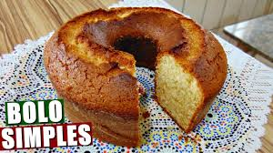
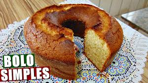

Receita fácil e prática de Pudim Manual da cozinha 80.K Views • three years ago Melhores Momentos Bahia VS Nacional-URU Cazé Tv 125.K Views • Eight hours ago  Receita de bolo de baunilha Receitas Brasil 145.K Views • Two hours ago Pegadinha do Celular Novo SBT Brasil 1.M Views • Five years ago Excel na Prática Informatica pra você 2.M Views • ten years ago Como Resetar um Macbook Manual da Informatica 2.K Views • two days ago
 Receita de bolo de baunilha Receitas Brasil 145.K Views • Two hours ago Pegadinha do Celular Novo SBT Brasil 1.M Views • Five years ago Excel na Prática Informatica pra você 2.M Views • ten years ago Como Resetar um Macbook Manual da Informatica 2.K Views • two days ago
Pegadinha do Celular Novo SBT Brasil 1.M Views • Five years ago Excel na Prática Informatica pra você 2.M Views • ten years ago Como Resetar um Macbook Manual da Informatica 2.K Views • two days ago
Excel na Prática Informatica pra você 2.M Views • ten years ago Como Resetar um Macbook Manual da Informatica 2.K Views • two days ago